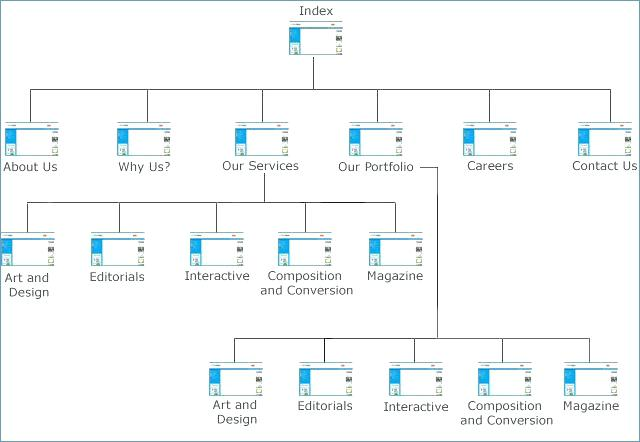

Sitemaps
When we refer to sitemaps, it can mean one of three things: html sitemaps, visual sitemaps, or xml sitemaps.
HTML sitemaps are from the early days of the web. Visual sitemaps are a UX tool that we will be using. XML sitemaps are a backend tool that makes it easier for search engines to find data faster. We'll take a look at all of these sitemaps below.
A short history of sitemaps
Sitemaps started out as one of the only ways to navigate through the pages of websites. They were a webpage with a list of all the links contained in the website. Since interfaces weren't always designed in a way that made them easy to use, the sitemap was a way for users to scan through all the content quickly to find the page they needed.
There aren't a lot of examples of classic html sitemaps still around, but you can see one at the Space Jam website.
With the invent of efficient navigation menus, html sitemaps have become largely obsolete. Now the term sitemap usualy refers to visual sitemaps, a UX tool for visualizing the structure of links on your website, or XML sitemaps, a behind-the-scenes version of html sitemaps used by modern search engines.
Visual sitemaps became popular as the internet grew and designers realized the need for planning out websites and how we interact with them. Visual sitemaps are used by UX Designers to plan out the flow of websites.
XML sitemaps were adopted by all major search engines in 2006. They were developed by Google in response to the increasing size and complexity of websites. This was largely influenced by the rise of ecommerce sites, like Amazon and Ebay, and the popularity of personal blogs.
Classic HTML sitemaps looked like this: a list of links often with minimal styling.
Visual Sitemaps
Visual sitemaps illustrations that represent a websites organizational hierarchy. This means they allow us to see how all of the pages on a website are linked together. From a UX standpoint, this makes it easier to determine the structure of a website and how that might affect user experience. In our case, it can also be a good tool for measuring the scope of your website and if it's feasible for our timeframe.
Just like wireframes, visual sitemaps can be created in either analog or digital formats. Remember this is an organizational tool for you, so do what works best for your process. The key is having a visual for how your webpages work together.
Once you can see the structure of your website, you can start planning how you intend your users to navigate through it. If your end goal is to get users to see the information or take action on a certain page, you can use your sitemap to see how you can start funneling users to the desired outcome.
It can be helpful if you walk through your sitemap in the eyes of a first-time visitor to your site. Starting at your home page, where do you want them to go? You can then add arrows or numbers to your sitemap to illustrate this movement.
Using your sitemap as a plan, you can build your pages in a way that guides users to your end goal.
A simplified visual sitemap for this website.

A visual sitemap showing how you can funnel users to certain pages by having multiple pages linked to the desired page.
XML Sitemaps
XML sitemaps do for search engines what HTML sitemaps did for users: they put all of the links to each page on a website in one place. This way a search engine can search one page for relevant results rather than crawling through thousands. This speeds up the time it takes for search engines to return your results.
Back to Top ↑